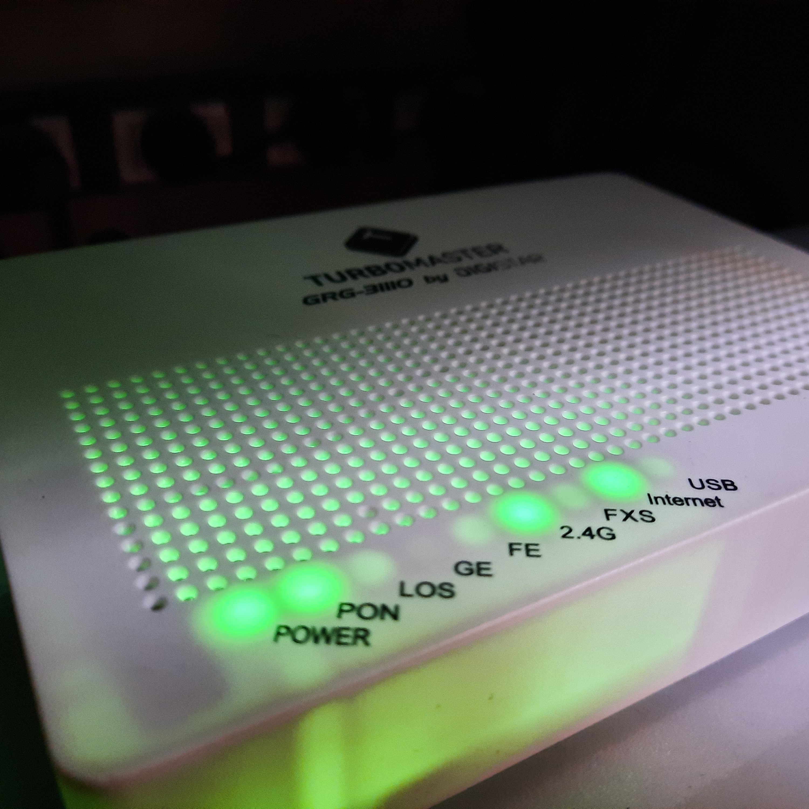

Fibra óptica
Nuestro servicio de fibra óptica abarca la zona urbana de la localidad de Pila. Ofreciendo velocidades
mayores, menos soporte técnico y un mejor tiempo de respuesta a la hora de utilizar cualquier tipo de
servicio que requiera conexión a internet.

Instalación
El servicio de internet por medio de fibra óptica consta de un equipo cliente (Módem) el cual queda
instalado en el interior de la casa, donde tendrá la cobertura WiFi y con la posibilidad de cablear
cualquier dispositivo. Los planes van desde los 15Mbps a los 100Mbps.